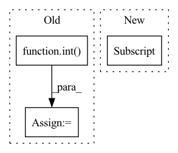

Pattern ID :949
Before Change
batch_size, C, L = x.shape
L1 = int(L / 4)
L2 = int(L / 2)
L3 = int( 3 * L / 4)
nonlocal_feature = torch.zeros_like(x)
feat_sub_l1 = x[:, :, :L1]
feat_sub_l2 = x[:, :, L1: L2]
feat_sub_l3 = x[:, :, L2: L3]
feat_sub_l4 = x[:, :, L3:]
nonlocal_l1 = self.non_local(feat_sub_l1)
nonlocal_l2 = self.non_local(feat_sub_l2)
After Change
nonlocal_feature[:, :, :L1] = nonlocal_l1
nonlocal_feature[:, :, L1: L2] = nonlocal_l2
nonlocal_feature[:, :, L2: ] = nonlocal_l3
return nonlocal_feature
In pattern: SUPERPATTERN
Frequency: 3
Non-data size: 3
Instances Fragment ID: 3478005
Project Name: guanghaoyin/rtcan-1d
Commit Name: c40a8978bd3a75323635f00a3a95ac53d3e2a888
Time: 2021-05-27
Author: yinguanghao.phd@gmail.com
File Name: model/Attention_module.py
M Class Name: NONLocal1D
N Class Name: NONLocal1D
M Method Name: forward(2)
N Method Name: forward(2)
M Parent Class: nn.Module
N Parent Class: nn.Module
M File Name: model/Attention_module.py
N File Name: model/Attention_module.py
M Start Line: 287
M End Line: 304
N Start Line: 287
N End Line: 300
Before Change
// TODO: loop if window_size is greater than 2 (for cycle loss)
bsz, encoder_dim, n_points = keypoint_desc.size()
batch_size = int( bsz / self.window_size)
_, _, height, width = desc_dense.size()
src_desc = keypoint_desc[::self.window_size] // B x C x N
src_desc = F.normalize(src_desc, dim=1)After Change
// GET SCORES for pseudo point locations
pseudo_norm = normalize_coords(pseudo_coords, height, width).unsqueeze(1) // B x 1 x N x 2
tgt_scores_dense = scores_dense[dense_inds]
pseudo_scores = F.grid_sample(tgt_scores_dense, pseudo_norm, mode="bilinear") // B x 1 x 1 x N
pseudo_scores = pseudo_scores.reshape(B, 1, n_points) // B x 1 x N
// GET DESCRIPTORS for pseudo point locations
pseudo_desc = F.grid_sample(tgt_desc_dense, pseudo_norm, mode="bilinear") // B x C x 1 x N Fragment ID: 3478039
Project Name: utiasasrl/hero_radar_odometry
Commit Name: 3393ae645f3b4eea057784a2cd3746aefb0c81b1
Time: 2021-01-08
Author: keenburn2004@gmail.com
File Name: networks/softmax_matcher.py
M Class Name: SoftmaxMatcher
N Class Name: SoftmaxMatcher
M Method Name: forward(5)
N Method Name: forward(5)
M Parent Class: nn.Module
N Parent Class: nn.Module
M File Name: networks/softmax_matcher.py
N File Name: networks/softmax_matcher.py
M Start Line: 26
M End Line: 63
N Start Line: 27
N End Line: 66
Before Change
image_tokens += [image_token]
if self.is_verbose:
token = int( image_token.detach().numpy())
print("image token {} is {}".format(i, token))
return torch.cat(image_tokens)After Change
image_token = self.start_token
for i in range(self.sample_token_count):
token_index = self.token_indices[i:i+1]
probs, keys_values_state = self.decode_step(
text_tokens = text_tokens,
encoder_state = encoder_state,
keys_values_state = keys_values_state, Fragment ID: 3478028
Project Name: kuprel/min-dalle
Commit Name: 17c96fe110fad3d48ea591dcd46475f521499770
Time: 2022-06-28
Author: brkuprel@gmail.com
File Name: min_dalle/models/dalle_bart_decoder_torch.py
M Class Name: DalleBartDecoderTorch
N Class Name: DalleBartDecoderTorch
M Method Name: forward(3)
N Method Name: forward(3)
M Parent Class: nn.Module
N Parent Class: nn.Module
M File Name: min_dalle/models/dalle_bart_decoder_torch.py
N File Name: min_dalle/models/dalle_bart_decoder_torch.py
M Start Line: 205
M End Line: 222
N Start Line: 206
N End Line: 212